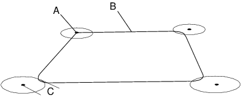

| 编程和测试 - 编程概念 | ||
| 例如：添加运动指令 | ||
| 概述 | 在下例中，您将创建一个简单的程序，该程序可以让机器人在正方形中移动。您需要四个移动指令来完成该程序。 
| ||||||||||||||||||
| 添加运动指令 | 本节详细介绍如何添加移动指令。
| ||||||||||||||||||
| 结果 | 程序代码如下所示： Proc main() MoveL *, v50, fine, tool0; MoveL *, v50, z50, tool0; MoveL *, v50, z50, tool0; MoveL *, v50, z50, tool0; MoveL *, v50, fine, tool0; End Proc; |